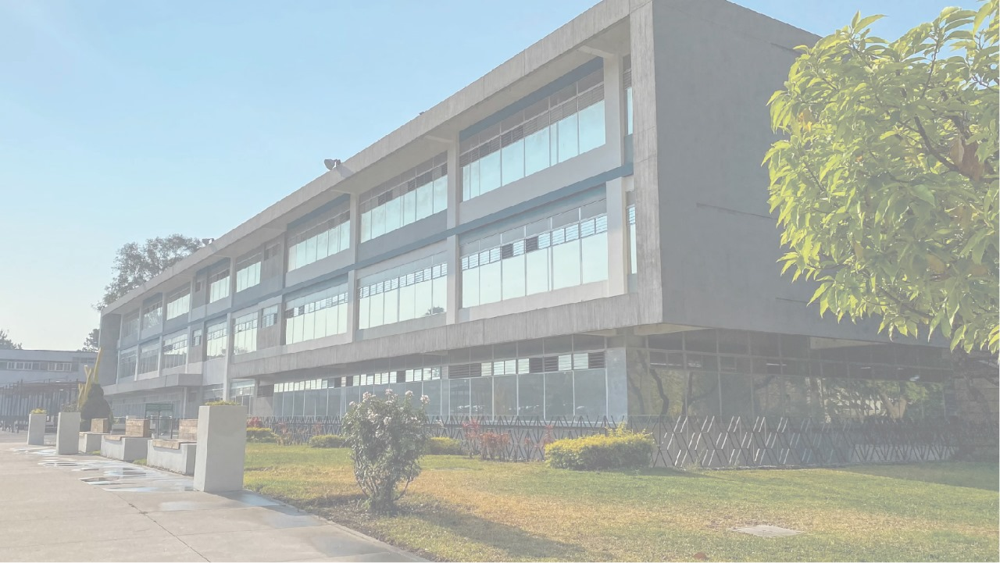

Campus Central de la USAC
Facultad de Ciencias Económicas y Empresariales
- - Administración de Empresas
- - Contaduría Pública y Auditoría
- - Mercadotecnia
- - Economía
- - Administración de Negocios Internacionales
Facultad de Ciencias Médicas
- - - Medicina
- - Enfermería
- - Nutrición
- - Tecnologia Medica
Facultad de Ciencias Jurídicas y Sociales
- - Derecho
- - Ciencias Políticas
- - Trabajo Social
Facultad de Ingeniería
- - Ingeniería Civil
- - Ingeniería Industrial
- - Ingeniería en Sistemas y Ciencias de la Computación
- - Ingeniería Electrónica
- - Ingeniería Mecánica
CAMPUS
- Campus Central (Ciudad de Guatemala): Ubicado en la zona 16 de la Ciudad de Guatemala, este es el campus principal y alberga la mayoría de las facultades y centros de investigación.
- Campus Quetzaltenango: Ofrece programas académicos adaptados a las necesidades de la región occidental de Guatemala.
- Campus Huehuetenango: Proporciona educación superior a la región noroccidental del país.
- Campus Zacapa: Atiende a la región oriental de Guatemala.
- ampus Escuintla: Brinda oportunidades educativas en la región sur del país